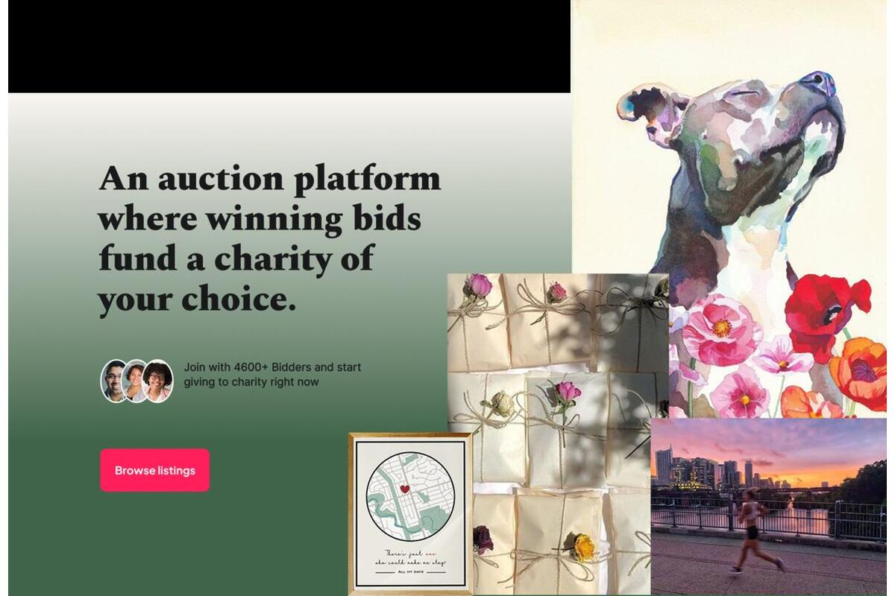
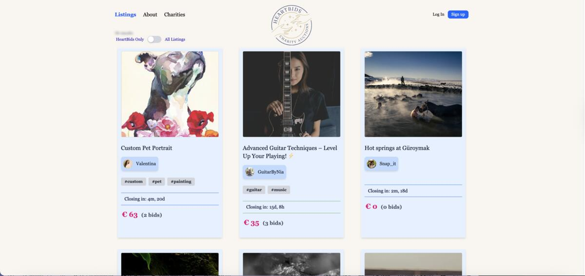
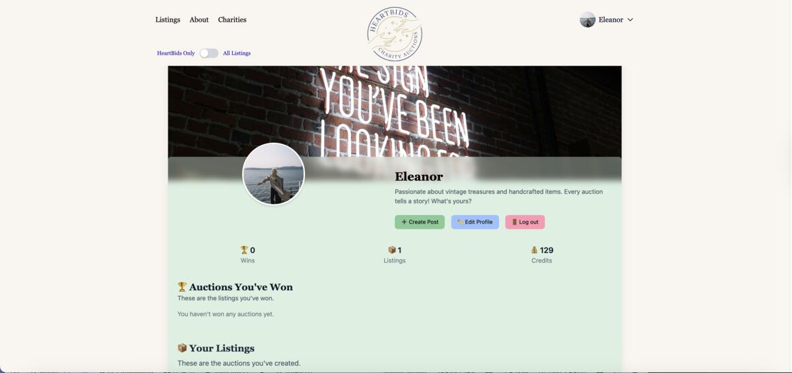
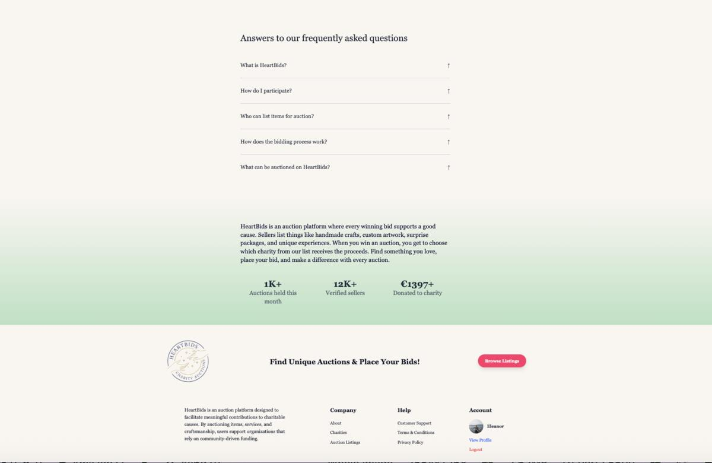

HeartBids - Auctions for a Cause
Built to empower giving. Designed for seamless bidding.
An auction platform where users can donate, bid, and win items to support charitable causes.


My Role in the Project
HeartBids was developed as my final exam project for FED Year 2, showcasing advanced React development skills. I was responsible for every aspect of the project, including:
- Full-Stack Development: Built the entire frontend using React with TypeScript, integrating with both the Noroff Auction API and a custom Firebase API for enhanced functionality.
- Design and UX: Created comprehensive design prototypes in Figma, including style guides and user flow diagrams to ensure a cohesive user experience.
- API Integration: Implemented dual API architecture - Noroff API for core auction functionality and Firebase API for charity integrations and additional user data.
- State Management: Developed React Context providers for user authentication and filtering states, ensuring efficient data flow throughout the application.
- Project Management: Utilized Gantt charts and Kanban boards in Notion to track progress and manage development milestones.
This project demonstrated my ability to build complex React applications with multiple API integrations while maintaining clean code architecture and user-centered design.
Technical Challenges
-
Dual API Architecture: Managing data flow between the Noroff Auction API and custom Firebase API required careful state management and error handling to ensure data consistency.
-
Real-time Bidding System: Implementing live auction updates and bid tracking while maintaining optimal performance across different user sessions and auction states.
-
TypeScript Integration: Ensuring type safety across complex data structures from multiple APIs while maintaining development efficiency and code readability.
-
Credit System Logic: Building a robust credit management system that tracks user earnings from sales and spending from bids, with proper validation and error handling.
-
Charity Integration: Creating a seamless charity selection system that dynamically updates user profiles with charity logos and information from the Firebase API.

Features
User Authentication & Profiles: Secure login with stud.noroff.no emails, customizable avatars, and comprehensive profile management with bidding history tracking.
Auction Management: Create, edit, and delete auction listings with image galleries, detailed descriptions, and deadline management.
Real-time Bidding System: Place bids, track bid history, and view real-time updates on auction status with automatic credit management.
Advanced Filtering & Search: Dynamic filtering by category, price range, and auction status with real-time search functionality.
Charity Integration: Select and support charities with logos displayed on profiles, powered by the custom Firebase API.
Credit System: Earn credits by selling items, spend credits on bidding, with transparent transaction tracking.
What I Learned
-
Advanced React Patterns: Mastered React Context for state management, custom hooks for reusable logic, and component composition for maintainable code architecture.
-
TypeScript in Practice: Gained deep experience with TypeScript for type-safe API integrations, complex data structures, and improved development workflow.
-
Multi-API Integration: Learned to manage data flow between multiple APIs while maintaining consistency and handling edge cases effectively.
-
Firebase Integration: Implemented custom Firebase API for enhanced functionality beyond the provided Noroff API, including real-time data updates.
-
Project Planning: Utilized professional project management tools (Gantt charts, Kanban boards) to track progress and meet exam deadlines.


Future Improvements
-
Enhanced Charity Features: Expand charity integration with donation tracking, impact metrics, and charity-specific auction categories.
-
Mobile App Development: Create a React Native version for mobile users to participate in auctions on-the-go.
-
Advanced Analytics: Implement user dashboards with bidding analytics, success rates, and personalized auction recommendations.
-
Social Features: Add user following, auction sharing, and community features to increase engagement.
These improvements reflect my vision for HeartBids as a comprehensive platform that combines auction excitement with meaningful charitable impact.
Explore HeartBids
Experience the platform where every bid supports a cause, or explore the source code to see the React and TypeScript implementation.